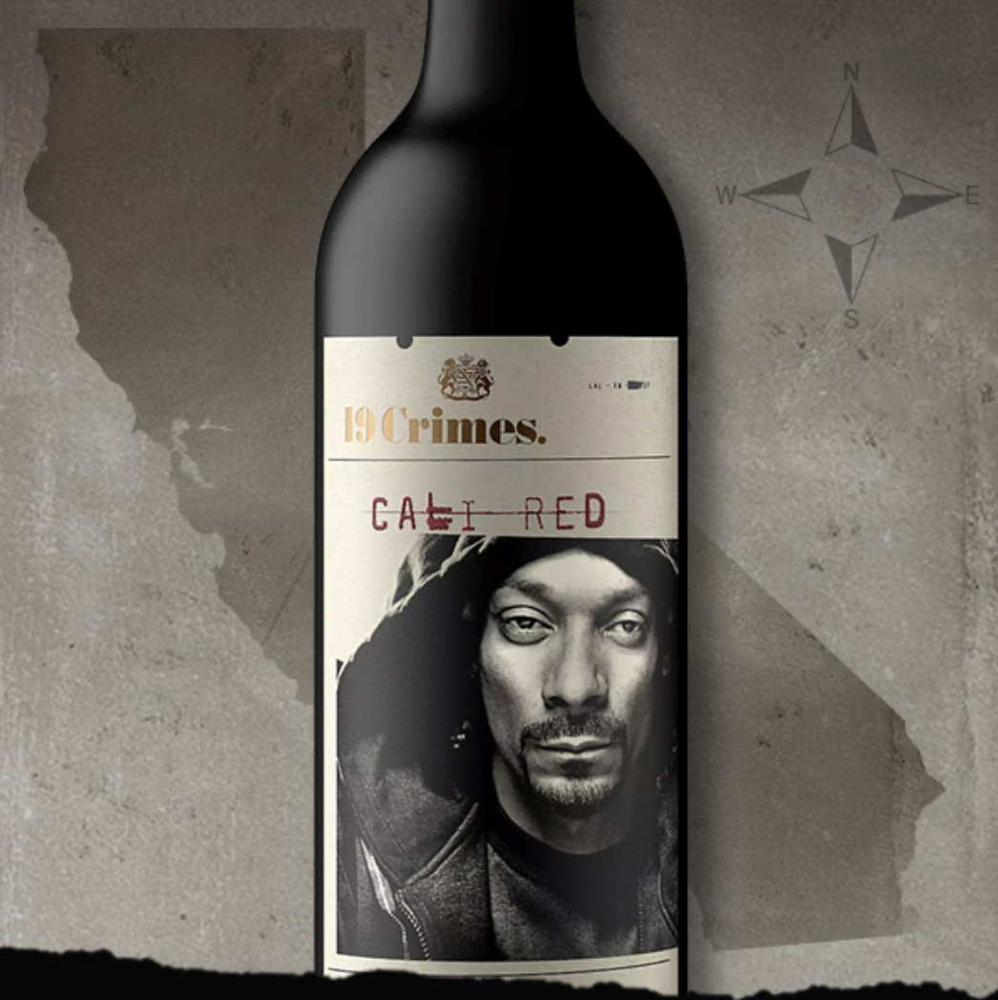

Many people would not believe the fact that wine in small quantities is better for you than not drinking wine at all!
Wine is good at preventing cancer, lowering blood pressure, preserves memory, lowers cholestrol, and is rich in antioxidants.
Some of the best wines of 2021 are:
Louis Latour Château Corton Grancey at Vivino
Charles Krug Cabernet Sauvignon 2017 at Drizly
Larkmead 2016 Napa Valley Cabernet Sauvignon at Vivino
Frank Family Vineyards Carneros Pinot Noir 2018 at Drizly
Felton Road Pinot Noir Calvert 2018 at Vivino
Penfolds 2017 Bin 389 South Australia Cabernet Shiraz at Drizly
Achaval-Ferrer Quimera 2014 at Drizly
Vega Sicilia Único 2009 at Vivino

Published November 4 2021
To Find 19 Crimes Wine Near You:
19 Crimes Wines